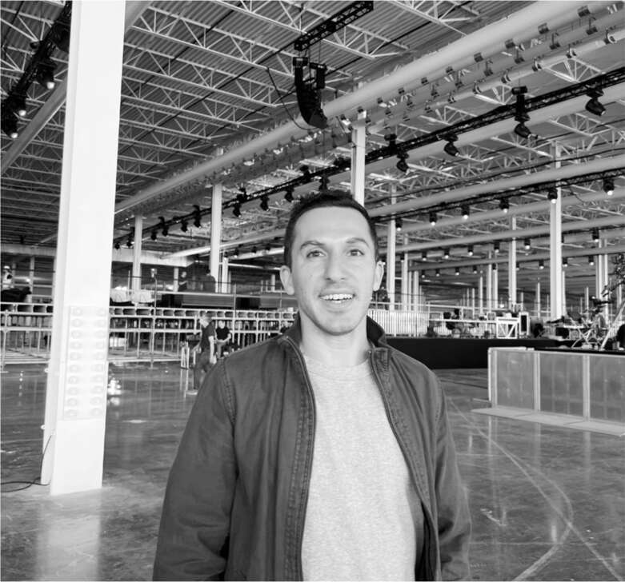

Austin
Những thành phố nào bạn yêu thích? Đó là một trò chơi mà Musk và những người khác tại Tesla bắt đầu chơi vào đầu năm 2020, thường xuyên lấy điện thoại ra, mở ứng dụng bản đồ và gọi tên các thành phố. Chicago và New York? Được đấy, nhưng chúng không phù hợp cho mục đích này. Khu vực Los Angeles hoặc San Francisco? Không, đó là nơi họ đang cố gắng rời bỏ. California đã trở nên quá khó khăn với chủ nghĩa NIMBY, tắc nghẽn bởi các quy định, bị cản trở bởi các ủy ban can thiệp và quá lo lắng về COVID. Tulsa thì sao? Không ai nghĩ đến Oklahoma, nhưng giới lãnh đạo địa phương đã phát động một chiến dịch mạnh mẽ để được xem xét. Nashville? Theo Omead Afshar, đó là một nơi bạn muốn đến thăm nhưng không bao giờ muốn sống. Dallas? Texas thì hấp dẫn, nhưng họ đồng ý rằng Dallas quá mang đậm chất Texas. Còn thị trấn đại học Austin, nơi có âm nhạc hay hơn và tự hào về việc bảo vệ những nét độc đáo của nó thì sao?
Vấn đề nằm ở việc xây dựng nhà máy Tesla mới ở đâu, một nhà máy đủ lớn để xứng đáng với cái tên Gigafactory. Nhà máy ở Fremont, California, sắp trở thành cơ sở sản xuất ô tô năng suất nhất nước Mỹ, sản xuất hơn tám nghìn chiếc xe mỗi tuần, nhưng nó đã hoạt động hết công suất, và việc mở rộng sẽ rất khó khăn.
Không giống như cách Jeff Bezos tổ chức một cuộc thi công khai giữa các thành phố mong muốn có trụ sở HQ2 của Amazon, Musk quyết định theo cách thường lệ của mình, dựa vào trực giác của bản thân và các giám đốc điều hành. Ông không thích ý tưởng lãng phí hàng tháng trời để nghe các bài thuyết trình chính trị và các bài thuyết trình PowerPoint của các nhà tư vấn.
Cuối tháng 5 năm 2020, một sự đồng thuận đã xuất hiện. Khi đang ngồi trong trung tâm chỉ huy tại Cape Canaveral mười lăm phút trước khi SpaceX phóng phi hành gia đầu tiên, Musk đã nhắn tin cho Afshar. "Anh muốn sống ở Tulsa hay Austin hơn?" Khi Afshar, với tất cả sự tôn trọng dành cho Tulsa, đưa ra câu trả lời mà Musk mong đợi, ông nhắn lại, "Được rồi, tuyệt vời. Chúng ta sẽ làm ở Austin và anh nên điều hành nó."
Một quy trình tương tự đã dẫn đến việc lựa chọn Berlin cho Gigafactory châu Âu. Nhà máy này và Austin sẽ được xây dựng trong vòng chưa đầy hai năm và cùng với Fremont và Thượng Hải trở thành trụ cột sản xuất ô tô của Tesla.
Đến tháng 7 năm 2021, một năm sau khi bắt đầu xây dựng, cấu trúc cơ bản của Gigafactory Austin đã hoàn thành. Musk và Afshar đứng trước một bức tường trong văn phòng xây dựng tạm thời và xem các bức ảnh chụp công trường ở nhiều giai đoạn khác nhau. "Chúng tôi đang xây dựng nhanh gấp đôi Thượng Hải trên mỗi foot vuông, bất chấp các quy định mà chúng tôi phải đối mặt", Afshar nói.
Với diện tích sàn nhà máy mười triệu foot vuông, Giga Texas, tên gọi của nó, sẽ có diện tích sàn gấp đôi Fremont và lớn hơn Lầu Năm Góc 50%. Theo một số tiêu chuẩn, Afshar cho biết, nó có thể là nhà máy lớn nhất thế giới về diện tích sàn, sau khi một số gác lửng được lên kế hoạch bổ sung. Có một trung tâm mua sắm ở Trung Quốc có diện tích lớn hơn, và Boeing với các cơ sở nhà chứa máy bay khổng lồ khác nhau có thể có khối lượng lớn hơn. "Chúng ta cần phải làm nơi này lớn hơn bao nhiêu để có thể nói rằng đó là tòa nhà lớn nhất thế giới?" Musk hỏi. Ngay cả với việc mở rộng 500.000 foot vuông trong tương lai mà họ đang cân nhắc, Afshar trả lời, "Chúng ta sẽ không đạt được điều đó." Musk gật đầu. Có một khoảng lặng rất dài. Sau đó, ông từ bỏ ý tưởng đó.
Các nhà thầu cho Afshar xem bản vẽ các cửa sổ lớn kéo dài từ vài feet trên mỗi tầng lên đến trần nhà. "Chúng ta không muốn nó hoàn toàn từ sàn đến trần sao?" anh hỏi. Một đề xuất được đưa ra cho các tấm kính được sản xuất đặc biệt cao ba mươi hai feet, và Afshar cho Musk xem ảnh. Steve Jobs, người bị ám ảnh bởi kính, sẽ không tiếc chi phí để có được những tấm kính khổng lồ cho các địa điểm trưng bày như cửa hàng Fifth Avenue của Apple ở New York. Musk thận trọng hơn. Ông đặt câu hỏi liệu kính có cần dày như đề xuất hay không và hỏi nó sẽ ảnh hưởng như thế nào đến cách mặt trời làm nóng tòa nhà. "Chúng ta không thể làm những việc ngớ ngẩn về mặt chi phí", ông nói.
Khi đi quanh nhà máy gần hoàn thiện, Musk dừng lại ở từng trạm trên dây chuyền sản xuất. Tại một điểm, ông chất vấn kỹ thuật viên ở trạm làm mát thép. "Anh có thể làm cho chất làm mát chảy nhanh hơn không?" Người này giải thích giới hạn về tốc độ của quá trình làm mát. Musk phản bác. Những giới hạn đó có thực sự dựa trên tính chất vật lý của thép không? Thép có thể giống như bánh quy, cứng bên ngoài và mềm bên trong không? Kỹ thuật viên giữ vững lập trường. Musk ngừng chất vấn, nhưng trực giác mách bảo ông rằng quy trình này nên mất ít hơn một phút. Ông giao cho kỹ thuật viên tìm cách đạt được mục tiêu đó. "Tôi muốn nói rõ," Musk nói. "Không quá năm mươi chín giây cho một chu kỳ, hoặc tôi sẽ đích thân đến đây và cắt nó đi."
Vào cuối năm 2018, Musk ngồi tại bàn làm việc ở trụ sở Tesla tại Palo Alto, nghịch một chiếc Model S đồ chơi nhỏ. Nó trông giống như một bản sao thu nhỏ của chiếc xe thật, và khi tháo rời, ông thấy bên trong nó thậm chí còn có hệ thống treo. Nhưng toàn bộ gầm xe đã được đúc thành một mảnh kim loại. Trong cuộc họp nhóm hôm đó, Musk lấy đồ chơi ra và đặt nó lên bàn hội nghị màu trắng. "Tại sao chúng ta không thể làm như vậy?", ông hỏi.
Một trong những kỹ sư đã chỉ ra điều hiển nhiên, rằng gầm xe thật lớn hơn nhiều. Không có máy đúc nào có thể xử lý vật có kích thước đó. Câu trả lời đó không làm Musk hài lòng. "Hãy tìm cách làm điều đó", ông nói. "Hãy yêu cầu một máy đúc lớn hơn. Điều đó không vi phạm định luật vật lý."
Cả ông và các giám đốc điều hành của mình đã gọi cho sáu công ty đúc lớn, năm trong số đó bác bỏ ý tưởng này. Nhưng một công ty có tên Idra Presse ở Ý, chuyên về máy đúc áp lực cao, đã đồng ý nhận thử thách chế tạo những cỗ máy rất lớn có thể sản xuất toàn bộ gầm sau và gầm trước cho Model Y. "Chúng tôi đã chế tạo máy đúc lớn nhất thế giới", Afshar nói. "Đó là máy sáu nghìn tấn cho Model Y, và chúng tôi cũng sẽ sử dụng máy chín nghìn tấn cho Cybertruck."
Các máy này phun nhôm nóng chảy vào khuôn đúc lạnh, chỉ trong tám mươi giây có thể tạo ra toàn bộ khung gầm trước đây gồm hơn một trăm bộ phận phải được hàn, tán hoặc liên kết với nhau. Quy trình cũ tạo ra các khe hở, tiếng kêu và rò rỉ. "Vì vậy, nó đã chuyển từ một cơn ác mộng khủng khiếp thành một thứ cực kỳ rẻ, dễ và nhanh", Musk nói.
Quy trình này củng cố sự đánh giá cao của Musk đối với ngành công nghiệp đồ chơi. "Họ phải sản xuất mọi thứ rất nhanh chóng và rẻ mà không có lỗi, và sản xuất tất cả trước Giáng sinh, nếu không sẽ có những gương mặt buồn bã." Ông liên tục thúc đẩy các nhóm của mình lấy ý tưởng từ đồ chơi, chẳng hạn như robot và Lego. Khi đi dạo quanh nhà máy, ông đã nói chuyện với một nhóm thợ máy về việc đúc các mảnh Lego có độ chính xác cao. Chúng chính xác và giống hệt nhau trong phạm vi mười micron, nghĩa là bất kỳ bộ phận nào cũng có thể dễ dàng được thay thế bằng một bộ phận khác. Các linh kiện ô tô cần phải như vậy. "Độ chính xác không đắt đỏ", ông nói. "Nó chủ yếu là về sự quan tâm. Bạn có quan tâm đến việc làm cho nó chính xác không? Vậy thì bạn có thể làm cho nó chính xác."

Omead Afshar